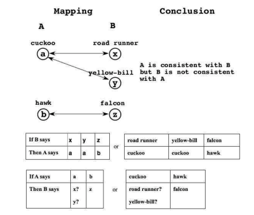
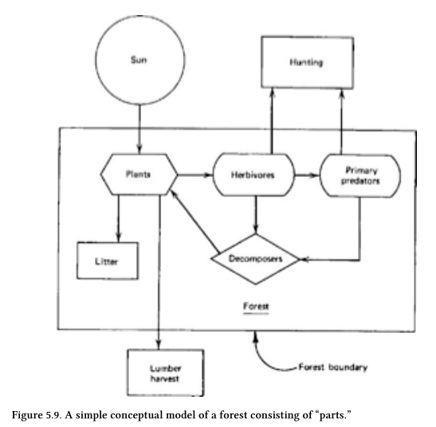
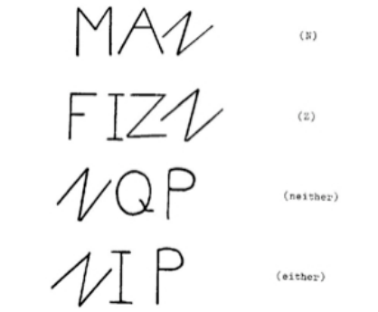
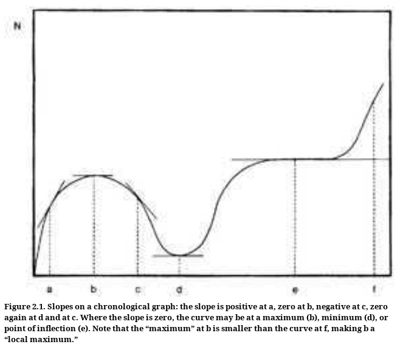
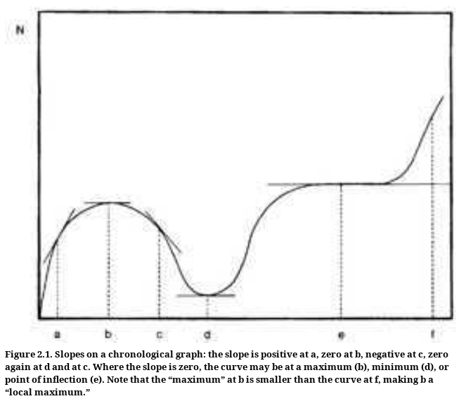

- + -
Preface to silver anniversary edition
- Albert Einstein
- + -
Original Preface
- People have foggy ideas
- ... about what they are saying
- ... how translating thoughts in computer programs
- Need fog clearing techniques
- Way of thinking
- ... a programmer could have
- People have foggy ideas
- + -
Chapter 1 - The Problem
- + -
The complexity of the world
- First step of knowledge
- ... is confession of ignorance
- Need to acknowledge our ignorance
- General systems is child of science
- + -
Mechanism and mechanics
- Examine Physics for general view of science
- Physics
- Study of objects in precise environment
- "Law of nature"
- Mechanics
- Karl Deutsch
- Why mechanics considered base of science?
- Very limited
- Only aproximatisation of mechanical systems
- Complex mechanical systems
- ... can be reduced to simpler ones
- Only then formal methods
- ... can do their work
- Example
- Solar systems
- Special tractable case of bodies in motion
- But we know it's wrong
- Many more bodies
- ... ignored to focus on motion for example
- ... influence of other bodies "too small"
- + -
The square law of computation
- + -
Need to understand
- How each object behave in isolation
- How each body affect the other
- How things behave if there is no body
- The "field equation"
- + -
Most general 2 bodies system
- 2 isolated equations
- 1 interaction equation
- 1 field equation
- + -
More there is body
- more interaction equation rise
- n bodies
- 2^n relationships
- + -
Need to lower the number of equations
- Example
- We don't care about small bodies
- Example
- + -
Square Law of Computation
- Amount of computation increase
- ... as the size of the problem increase
- ... at least as the square of number or equations
- ... if no simplification is made
- + -
Example
- If double equations
- ... need computer 4 times as fast
- ... to solve things in good amount of time
- Limit of size of a system of equation can be solved
- + -
Need to understand
- + -
The Simplification of Science and the Science of Simplification
- Practical computation
- Implicit assumptions need to be brought
- ... out into the open
- Programmer study
- ... how people make assumptions
- Mechanics
- Need to assume that some interactions
- ... are more important than others
- Example
- Gravity in solar system
- Why?
- They give satisfactory answers
- ... means match observational data
- Greatest generalization achieved
- Newton
- F=GMm/r^2
- M
- Mass of first object
- m
- Mass of second object
- r
- Distance between object
- G
- Universal constant
- M
- State implicitly that no more equation needed
- ... but only about for pair
- simplification
- Works in mechanics but not in psychology
- For solar system
- reduce equations from 1000 to 45
- 10 things taken in pair
- Square law of computation
- Size of our task decrease
- ... by square of 1000/45
- ... or about 100 time
- Consider mass of Sun bigger
- ... only consider pair with the sun
- reduce equations from 1000 to 45
- Separating systems into non-interactive systems
- Extremely important in science
- n^2 computation if there is interaction
- ... n otherwise
- Square Law of computation put a limit of any computing device
- The human brain is some sort of computing device
- If we want to survive in a complex world, we need all the help
- Newton was a genius
- Not because of his brain
- ... but because of his ability to take world and
- simplify
- idealize
- streamline
- Practical computation
- + -
Statistical Mechanics and the Law of Large Number
- Newton achievement
- Describing system with around 105 objects
- ... of which found 10 of interest
- Law of Large Number
- Larger the population
- ... more likely we are
- ... to observe values
- ... close to predicted
- ... average value
- Mean in statistics
- Statistical mechanics
- "Unorganized complexity"
- Complex systems
- ... sufficiently random
- ... so sufficiently regular
- ... to be studied statistically
- + -
The Law of Medium Numbers
- Small population
- Just need to observe what they do
- Organized simplicity
- machines
- Large population
- Statistics and average works because there is enough randomness
- Unorganized complexity
- aggregates
- In between
- Too structured for statistics
- Too large for direct observation
- Organized complexity
- systems
- Medium numbers
- For medium numbers expect
- Large fluctuation
- Irregularities
- Discrepancy
- ... with any theory
- ... more or less regularly
- We're surrounded with medium number systems
- Becomes Murphy's Law
- Separations becomes weak link
- Shouldn't be despised
- Shouldn't be glorified
- Just a solution to our limitations as humans
- The world is a whole
- We cut it into pieces for convenience
- It's useful sometimes
- ... but shouldn't be extrem
- Physics had a lot of success
- Can separate the world into little pieces
- ... but less biology or sociology
- Small population
- + -
The complexity of the world
- + -
Chapter 2 - The Approach
- + -
Oranism, Analogy, and Vitalism
- See Kennet Boulding
- General Systems as a Point of View
- If system poorly known
- Difficult to model anything
- ... but can give fresh point of view
- .... if something known about analog
- Need good analogies and analog
- Make model rigorous
- ... or tempting to ignore discordant parts of model
- Not too dangerous in practice
- ... if model not taken seriously
- Every model
- Expression of one thing we hope to understand
- ... in terms of things we do understand
- Need some primitives to avoid too many questions amoung yourself
- Example
- Animism
- Every object has a spirit
- Many primitives
- God
- 1 Primitive
- Explain everything so nothing
- Animism
- Claim of mechanisms
- Every phenomenon reduced to primitive of physics
- ... but they didn't demonstrate "everything"
- Science essentially reductionist
- Study of things reduced
- ... to study of other things
- Science didn't reduce all phenomena
- to physical
- ... or chemical primitives
- Simplifying with analogies
- Every significant thinkers in science
- ... do exactly that
- See Kennet Boulding
- + -
The Scientist and Her Categories
- What the thinking of different disciplines have in common?
- How do we know what we know?
- How thinking is done?
- Most thinking
- Personal
- Idiosyncratic
- Much what's done in communicable
- How the ideas we hold are knowledge?
- Group
- Common set of standards
- Categories of thoughts
- Simplify internal communication
- More effective categories
- ... are for internal communication
- More difficult to make communication
- ... with outsiders
- Modern society has many groups
- Switch patterns easily
- When it's not easy
- "foreign" patterns are difficult
- "ethnocentrism"
- Science form social groups
- Thomas Kun
- Paradigms
- How they're
- created
- destroyed
- How created from one generation to the next
- How they help / hinder progress of science
- "Scientific revolution" attack the paradigm
- Scientists do only one revolution
- No gain for the second
- Some transport paradigms from one field to another
- Know one thing very well
- Apply it to everything
- Generalists
- Believe in generality of science
- Higher
- vantage point
- level of generality
- Thinking one paradigm is more "real"
- DANGER
- Faith in truth of own discipline
- ... diminish chance of revolution
- Good generalists don't have faith in anything
- Believe of something without evidence
- Thomas Kun
- + -
The Main Article of General Systems Faith
- + -
Without faith we can't live
- We wouldn't do anything anymore
- Example
- No faith in walking
- ... so I shouldn't!
- Need to search
- Law about law
- Order about order
- Second degree thinking
- ... power of generalisation through induction
- ... can then draw conclusions of case not observed
- Faith is needed
- Generality from one to other disciplines don't always work
- We can't have enough info
- ... to be sure it will work
- ... because explosion of knowledge
- Leap of faith in the dark
- Generalist approach complex systems
- ... with naive simplicity
- children
- Generality from one to other disciplines don't always work
- Errors show often in order of second degree
- Might be soon enough
- Need to
- ignore a lot of data
- see the mere outline of things
- + -
Without faith we can't live
- + -
The nature of General System Law
- + -
Paradigm of scientific assertion
- "If so... then so"
- Often "if so" taken away for simplicity
- otherwise too complicated
- ... to reason
- ... or even use
- + -
Roles of laws in scientific thinking
- Guides to measurement
- Define the terms within them
- Remind us to look for things we have not noticed
- Product behavior
- Rallying point to discuss
- Ways of measurement
- Meaning of term
- Heuristic
- Problem solving techniques
- + -
Learning to think scientifically
- Remembering the laws
- Knowing which law and in what way
- + -
If law as many "if-so" closes
- Difficult to
- remember
- know when to use it
- When choice is between
- sentence with "if so"
- redefining term
- ... redefine the term
- Difficult to
- + -
If law as few "if-so"
- General law
- + -
If facts contradict the law, two solutions
- Reject the law
- Change the law
- + -
Law of conservation of law
- When the facts contradict the law
- ... reject the facts or change the definitions
- ... but never throw away the law
- + -
Science obey this law
- When law invalidated
- ... it's maybe because law has too much info
- Have more
- condition
- definition
- exception
- ... more precise answer to more narrow knowledge
- ... but lose their original flavors
- + -
General system laws of this book
- Not designed to yield answers
- Can afford to be occasionally wrong
- Never used to praise conclusion
- ... without checking inside
- + -
Improve memorability
- Making system laws no more precise
- Add phrase or catchy name
- To remember, use
- Prohibition
- Contradiction
- Paradox
- Example
- Law of Conservation of Energy
- "It's impossible to build a perpetual motion-machine"
- + -
Laws are not constraints for thoughts
- They are stimulants
- Increase memory of law with unforgivable examples
- + -
Law of happy particularities
- Any general law must have at least two specifics applications
- + -
Law of unhappy peculiarities
- Any general law is bound to have at least two exceptions
- If you never say anything wrong, you never say anything
- + -
Example
- Composition law
- The whole is more than the sum of its part
- Decomposition law
- The part is more than a fraction of the whole
- ... seems contradictory so hard to forget
- Composition law
- + -
What advantage of these laws?
- Not helpful for exact predictions of complex systems
- Guard us to fallacy of exact prediction
- It isn't what we don't know that gives us trouble
- ... it's what we know that ain't so
- + -
Paradigm of scientific assertion
- + -
Varieties of System Thinking
- 3 sort of activities involving models
- Improving through process
- General system thinking
- Studying special systems
- Creating new laws and refining old ones
- General system research
- Improving through process
- General system approach help learning new subjects
- Know already general info about subjects
- Might map with information of specialist
- Make sharp questions possible
- Example
- Economist's law of diminishing return
- ... is law of limiting factors
- 3 sort of activities involving models
- + -
Oranism, Analogy, and Vitalism
- + -
Chapter 3 - System and Illusion
- + -
A system is a way of looking at the world
- Truth natural for poet
- ... terrible for scientist
- Example
- Learning musical sheet
- Learning rules of a game?
- ... or acquiring knowledge?
- Learning musical sheet
- Fools to believe that other point of views
- ... are fooling
- ... or less true
- Egocentrism
- Form of animism
- Form of vitalism
- Einstein
"The belief in an external world independent of the percipient subject is the foundation of all science"
... but not
... "An external world independent of the percipient subject is the foundation of all science"
- Belief in external world independent of percipient subject
- Heuristic device
- Mental tool to aid discovery
- ... but can't tell us when or where it can be applied
- The banana principle
- Heuristic devices don't tell you when to stop
- Scale of ascending value for heuristic devices
- idea
- concept
- rule
- principle
- law
- reality
- truth
- Further along the scale the less we see heuristic
- ... as a device
- Tend to think we can use the device forever
- We forget the banana principle
- Example
- The most success we have
- ... the more sure we become
- One of most powerful heuristic
- It exists a reality
- ... independent from the observer
- Example
- "The exception proves the rule"
- First meaning of proof
- Printing and photography
- Test applied to a substance
- ... to determine if they are satisfactory quality
- Exception doesn't say rule is true
- ... it simply tests it!
- "Accepting meaning"
- Implies somebody doing the accepting
- ... an observer
- ... so likely division of understanding
- Problem of absolute speech
- Say there is one point of view
- ... even if there are multiple
- In general, no problem with that
- ... but you can learn more considering
- ... relative nature of things
- How avoiding fallacies of absolute thoughts?
- Tools are human-made
- models
- words
- instruments
- techniques
- Absolute thinking is helpful in some contexts
- Conventional context
- ... aka most of the time
- Tools are human-made
- Any system
- Point of view of one or several observers
- Good or bad
- ... depends only of the purpose
- ... which the system is designed
- ... to satisfy
- + -
A system is a set
- Anything could be a system
- Truly arbitrary system
- Can't say anything general
- ... about them
- ... except
- "nothing general can be said"
- Hard to find
- Most systems are non arbitrary
- General system approach
- Attention to non arbitrary systems
- Reasons of non arbitrary
- "source of the order"
- Non arbitrareness can be
- outside, in real world
- in the observer
- Observer
- Often ignored in system thinking
- Most popular way
- Math represents the system
- Set theory
- Every system is a set of
- objects
- names
- ... representing sort of "things"
- ... which might be other names
- relationships
- objects
- Doesn't say anything why observer might choose them
- Every system is a set of
- Naming non-existent set members
- Potential fallacy
- Worst
- Doesn't exist
- ... but we don't question their existence
- Enumeration of element of a set
- Can be its representation
- Has its pitfalls
- From Plato, set can be typified
- For him
- Special type is better
- ... than enumeration of all objects
- ... but strictly observer mental construction
- ... useful for mass of data
- For him
- ... but decomposition fallacy
- Different people can have
- ... different idea of type
- Example
- (Browning, Blake, Byron...)
- Type?
- Set of all English poets beginning with "b"?
- All English poets
- All great poets?
- ... could be a thousand sets!
- In literacy, ambiguity can be intentional
- Not good for sciences
- Type needs to be made
- Explicit
- Operational
- Most often explicit in math operations
- Example
- Set of even number
- Example
- ... not when dealing with real world
- Sets are difficult to construct there
- Computers expose flaws of explicit rules
- When tried to manage rules
- ... many discovered
- ... they never precisely knew
- ... what they were doing
- Simplest mental acts are not simple
- Not completely rational
- Not entirely arbitrary
- Example
- Parsing a sentence
- Deduce its semantic
- We don't know what happens in our head
- + -
Observers and Observations
- + -
What's in a set?
- Objects?
- Parts?
- Elements?
- Attributes?
- ... discord implies that nobody knows
- Undefined primitives
- If we know what they are
- ... we're not speaking about system in general
- ... but about specific systems
- Bertrand Russel
- "Mathematics gets its appearance of truth from not saying what it is talking about"
- If the member of the set "ain't nothing"
- It's contentlsess
- ... that is mathematical
- Mathematical argument
- Not true or false
- ... but
- valid
- "internally consistent"
- invalid
- valid
- Correspondence between
- Math argument
- Something real
- ... speak of argument being "true"
- Invalid argument can never be true
- ... but not really a mathematical assertion
- ... more philosophical one
- Problem: math doesn't distinguish between
- sterile
- productive
- Disease of general system movement
- "hypermathematisis"
- Sterile because can be applied to anything
- ... and therefore nothing
- How to prevent it?
- Formulation of idea with words instead of symbols
- Stay close to things
- ... we want to speak about
- Law of happy particularity
- Avoid any math notation
- ... except if we use it more than once
- ... provide economy of notation
- Example
- Set notation
- Not because it looks good
- ... but to talk about delimited range of possibilities
- Formulation of idea with words instead of symbols
- Observer using Carthesian product of sets
- Error or composition
- Too broad characterisation
- ... of an observer
- Model too general
- If scope properly characterized
- Cartesian doesn't exclude any observation possible
- Gives us a way to prevent undergeneralization
- Error or composition
- Symptom of hypermathematic models
- Using product set is everything
- Give all possible discrimination
- ... to all possible condamnation of discrimination
- But can end up with enormous set!
- Combinatorial size
- Perfectly general
- ... but doesn't fit computational capacity
- ... of any system
- Using product set is everything
- + -
What's in a set?
- + -
The Principle of Indifference
- Consistency
- Compatibility one set of observation with another
- Cannot depend how observer
- ... names his observation
- Example
- (manchette, negligente)
- (cuff, careless)
- Consistent
- One in English
- Other in French
- Example
- Principle of indifference
- Laws should not depend
- ... on a particular choice of notation
- Try to reformulate statement with same meaning
- If it doesn't hold
- ... it doesn't follow the principle
- ... so incorrect
- Name often changed
- By revolutionary acts
- ... to change thinking pattern
- If it needs a revolution
- ... indicate the magnitude of their grip on minds
- Take math symbol to use principle of indifference
- Take sting out of words
- Testing consistency of two observers
- Neutralize form of observation
- Each observation has an arbitrary name
- Get rid of subjective
- A observe a pachyderm
- B observe an elephant
- ... consistent!
- One observer dominating another
- Img
- 
- Can guess what A will say if B says something
- ... inverse not true
- Many to one mapping from B to A
- One to many mapping from A to B
- A consistent with B
- So A observation
- ... doesn't bring anything to B
- B is dominant
- Img
- Neither observer dominate
-

Most like that in real situations
We can learn from both observers
-
- Easy to think that
- ... we can observe everything
- ... when speaking about other's point of view
- ... but we don't have this power!
- + -
For simple case, can have a "superobserver"
- Viewing capacities
- ... dependant of the capabilities
- ... of present observers
- Not omniscient
- View must dominate view of any other observer
- In extreme case use carthesian product
- ... of all observers present
- Combinatorial power
- Img
-
- Grow very fast
- That's why only useful in simple situation
- Example
- Two observer can discriminate 10 situation
- Superobservers can discriminate 10^2
- Img
- Consistency
- + -
A system is a way of looking at the world
- + -
Chapter 4 - Interpreting Observations
- + -
States
- Situation which can be recognized if happen again
- Black box game
- Observer
- Omniscient
- All seeing
- Passive
- Not omnipotent
- Can't do everything
- Can't influence the system
- Omniscient
- Can observe but can't influence it
- Works for astronomers
- ... but break down when get closer to home
- If courageous enough
- ... we try to interact with the system
- World
- Independent of the percipient observer
- Dependent of the participant observer
- Observer
- + -
The Eye-Brain Law
- The Eye-brain law
- "To a certain extent, mental power can compensate for observational weakness"
- The Brain-eye law
- "To a certain extent, observational power can compensate for mental weakness"
- Examples
- Experienced doctor needs fewer laboratory tests
- ... than interns to make diagnosis
- Intern can substitute years of experience
- ... with a good laboratory
- We drive more slowly at night to compensate reduced vision
- We write notes on papers for later reading to relieve our memory
- Eye-brain law doesn't work when no constraints in observation
- Memory is of no use
- ... if future is like the past
- Discriminating too many states is bad
- Being too precise makes everything more complex
- Balance can't be pushed too far between
- "eye power"
- "brain power"
- Problem of science: to find a compromise
- The Eye-brain law
- + -
The Generalized Thermodynamic Law
- Observational problems grow greater
- ... the most complex the system
- What we observe depends of our characteristics as observers
- ... but not only
- + -
Two extreme views
- Realists
- What's in our heads is real
- Solipsist
- Everything we see is in our head
- Realists
- ... both suffer from same disease
- + -
2 components of observation (Galileo)
- Primary qualities of matter inherent in matter
- Secondary quality
- Product of interaction
- ... of body possessing
- ... primary qualities
- ... with sense organ
- ... of human observer
- + -
Generalized thermodynamic law
- More probable states are more likely to be observed
- ... than less probable states
- ... unless specific constraints
- ... exist to keep them from occuring
- + -
The things we saw more frequently are more frequent
- Because physical reasons to favor some states
- First law of thermodynamic
- ... about conservation of energy
- Because there is some mental reasons
- Second law of thermodynamic
- .... about limited power of observer
- ... when viewing system of large numbers of particles
- Keep us to overdo realistic thinkings
- Because physical reasons to favor some states
- + -
State is a situation
- ... which can be recognized
- ... if it occurs again
- + -
States won't be recognized
- ... if we don't put many of them
- ... in one state
- + -
The lump law
- If we want to learn anything
- ... we mustn't try to learn everything
- + -
Science only deal with repetitive events
- Need to lump states of system
- ... to generate repetitions
- + -
Functional Notation and Reductionist Thought
- + -
Math
- Great ease of manipulation
- Cost of certain loss of complexity of content
- + -
Math in applied field
- Kenneth Boulding
- wonderful servant
- bad master
- + -
Observer defines
- its scopes
- its grain of observation
- ... how
- broad
- deep
- Might have decisive effects on what's learned
- + -
When choosing scope
- What most important feature we can observe?
- Examples
- z = f(a, b, x)
- We only care about a, b, x
- y = y(a, b, x)
- Depends on the same things as z
- ... but in different ways
- z = f(a, b, x)
- + -
Functional notation very important in general system thinking
- Express partial knowledge
- ... about a system
- Example
- F = f(M, m, r)
- Newton and force of gravitation
- When we know
- force on two mass (M, m)
- ... and force in between (r)
- ... easier to find functional relationship
- Simplify cumbersome verbal argument
- When we don't have a clue
- Example
- d = g(...)
- Clear the intention
- Remember to come back to problem
- Example
- B dominate observer A
- All of A observation can be observed by B
- A = f(B)
- Nothing else needed to determnine A
- + -
Math
- + -
Incompleteness and Overcompletness
- When decomposing using functions
- 2 fallacies
- + -
Incompleteness
- Example
- T = f(a)
- When we vary a
- ... T doesn't change
- Maybe T = f(a, ...) ?
- Miss something
- Example
- + -
Overcompleteness
- Example
- T = f(a)
- When we vary a
- ... T doesn't change
- Maybe T doesn't depend on a?
- Example
- What's the right answer?
- + -
Get more complicated with more variable
- For any finite set of observation
- ... the set of explanations is infinite
- + -
Example
- Illustration
-
- One involve a, the other don't
- Which is better?
- Observation don't talk
- It's the choice of observer
- No model is "right"
- Illustration
- + -
Incompleteness
- Being state determinated
- + -
St + 1 = f(St)
- t = time
- ... true almost always, everywhere
- State in future
- + -
... always depends on state in presents
- But if view is not state determined
- ... might be different
- Example
- Can't observe some states
- + -
St + 1 = f(St)
- Two models that fils all observed data
- isomorphs
- "same shape"
- Mathematically, 2 models need to fit all possible data
- ... but here need to fit all observed data
- Arbitrariness of choice of the model
- + -
The Generalized law of complementarity
- Problem of complementarity
- Special case of failing
- ... to get a complete view
- Observers interacting in unknown ways
- Example
- Anthropologists describing
- ... two different things
- ... when looking at same village
- It's a complementary view
- Two irreducible point of views
- ... not totally independent
- Example
- General law of complementarity
- Any two points of view are complementary
- Even if we can get rid of complementarity
- ... do we really want to?
- Reductionism never achieved in practice
- Nobody has ever observed
- ... the final reduction
- ... of any set of observation
- We've difficulties to accept complementarity
- We're a bunch of fanatics
- Problem of complementarity
- + -
States
- + -
Chapter 5 - Breaking Down Observations
- + -
Introduction
- Humans have resistances when speaking about limits of intellect
- + -
One of the limitation
- We don't know
- ... the precise limitation
- + -
If limited memory
- Decomposing a system
- ... into non-interacting part
- ... help us predicting behaviors
- Method of science
- Unnecessary
- ... except if our brain is limited
- Can every sequence can be decomposed in independent ones?
- Principle of difference
- Laws should not depend
- ... on a particular choice of symbol
- ... but they usually do
- Useful to choose new symbol to decompose pb better
- Difficult to change your vision / categorisation of them
- How physicist recognize
- entropy
- density
- How economist recognize
- profit
- marginal utility
- How physicist recognize
- + -
The Metaphore of Science
- + -
Trying to cope with phenomena
- unfamiliar
- complex
- ... we try to
- Get complete view not to be surprised
- Get a minimal view to not overtax our observational powers
- Get an independent view to reduce mental effort
- One that decompose observed states
- ... into noninteracting qualities
- ... but resulting way at looking at the world
- + -
... might lack consistency
- Used not to carry different point of view
- ... in our head at each moment
- + -
Axiom of experience
- The future will be like the past
- ... because in the past
- ... the future was like the past
- What else can we do?
- + -
Axiom of experience turned around
- Two things are alike
- ... if one in the present
- ... can be substituted for in the past
- + -
It means important properties will be preserved
- But what are they?
- Poetry with metaphore
- + -
... describes many ways to be like another
- Example
- My love is like a red rose
- Work because property transferred
- ... from one another
- Example
- + -
Problem with specialization in science
- Few experiences in common
- ... to serve as basis for communication
- Example
- My love is like a red rose
- A celibat could understand love as a rose
- ... because he has a garden
- + -
Example of the rose
- love = f(rose, ...)
- Love is like a rose in an unspecified way
- Science
- Like a pact define a global understanding
- ... and reduce it by mean of function composition
- + -
Academic poetry
- Poetry based on other poetry
- Basis of reference is not direct experience of the world
- ... but experience of other poetry
- ... same for academic science
- + -
Russel
- "Math is without content"
- Not an insult
- Math ideal: without "profane" math
- ... but can't be reached
- Base step of inference is observation
- ... and we're profane material
- All of that lead us to learn about ourselves
- + -
Trying to cope with phenomena
- + -
Boundaries and Things
- Most deeply buried metaphor of science
- "thing"
- "part"
- ... that can be separated cleanly
- ... from other "things" and "parts"
- So deep, rarely know when we're using it
- Example
- "Social organisation"
- ... of anthropologist
- Example
- "Things" have "properties"
- Properties isolated
- ... from others when "things"
- ... separated from other "things"
- ... closely allied to experience of physical space
- Specifically to our experience of boundaries
- "The boundary of one thing
- ... is the beginning of the other"
- Leonardo
- "Outside"
- Far away place
- Idea of things placed at great distance
- Do not affect each others in appreciable way
- + -
Illustration
-
- + -
Always confident that clean separation between
- system
- inside
- environment
- outside
- system
- Principle of indifference
- Can call either one "the system"
- Inside of one can be the environment of the others
- Choice very important to our view of the world
- Influenced by our choice of boundaries by
- past experiences
- experiences of ancestors
- ... excellent guides most of the time
- ... but difficult to clear out when don't work
- When boundaries not clear
- Useful to shift
- inside
- outside
- ... but habits can blind our thoughts
- Useful to shift
- Sometimes bounderies don't separate but connect
- Interface
- ... looks both
- inside
- outside
- Boundary metaphor
- System thinking through diagrams
- Box
- boundary
- Arrow
- interface
- + -
Power of such diagram can mislead via
- shapes
- placement
- attractiveness
- Not all systems can be separated in clean way
- + -
Example
- A forest
- img
- 
- + -
Example
- Need precise description of separation
- Human can only process a number of box (=~15)
- Most deeply buried metaphor of science
- + -
Qualities and Principle of Invariance
- + -
What is a quality?
- Can't define it
- ... except if you point the state
- ... which has different values
- ... of this "quality"
- Qualities
- Mental function for observer
- ... with limited quality
- Some are more "natural"
- More accustomed
- Genetically accustomed too
- ... because more useful
- ... to observe them that way
- More accustomed
- If we work in less familiar situations
- Perceptual capacities
- ... less and less effective
- Try to treat question abstractly
- Trying to find quality of "brilligance"
- Which state has which quantity of brilligance?
- If all state has same quantity,
- ... impossible to decompose the problem
- Don't need to be numerical quantity
- Quality
- Way of grouping states of a system
- Quality of mass
- Storing states of system
- ... where masses are different
- ... or the same
- If we want to measure, need more operations
- Example
- Greater than
- Example
- Extensive quality
- Depends of maintaining the full extent of system
- Example
- Chocolate bar and mass
- When broken, mass differ
- ... so extensive mass
- Intensive quality
- Each bar broken retains same "chocolateness"
- Plural English comes from our way of breaking
- Much / Many
- Carry a set of rule for "proper" breaking
- You won't divide every peanut in half
- The invariance principle
With respect to any given property, there are those transformations that preserve it and those that do not
With respect to any given transformation, there are those properties that are preserved by it and those that are not
- Some transformations seen as tools
- Preserve qualities
- ... we're interested by
- We say which properties are important
- + -
... by prohibiting the corresponding transformation
- Example
- Diagram
- No problem to change position of box
- Don't delete or inverse arrow!
- Example
- Restating principle of invariance
- We observe change only by observing what remains invariant
- ... and permanence only by what is transformed
- + -
What is a quality?
- + -
Partitions
- If first partition made successfully
- ... 3 math rules can tell us how to subdivide more
- ... but don't tell us how to make the first one
- Partition
- Set of ordered pair
- Relation "has the same value of some quantity"
- + -
Reflexivity
- Mathematical condition to describe partition
- For every state x
- ... the pair (x, x)
- ... must be in the relation
- Quality needs to be consistently identified with specific state
- ... or it's not a quality anymore
- Reflexive condition
- If partition describes quality
- ... it means that quality can't change overtime
- ... with state remaining the same
- Useful against error of taking relative quality as absolute
- Example
- Dividing a village between cousins
- Doesn't work: "cousin" is not absolute property
- A person is not a cousin
- ... but a cousin of somebody
- She can't be her own cousin
- The pair (x, x) is not in relation
- "Is a cousin of P" as quality could work
- Mathematical condition to describe partition
- + -
Symmetry
- Second mathematical condition for partition to be quality
- Quality doesn't depend on order
- Does d has same quality X as f?
- Does f has same quality X as d?
- ... answer should be the same
- Example
- Dividing a village by group of friend
- A is friend of B
- B is possibly not a friend of A
- ... therefore doesn't hold
- + -
Transitivity
- Third condition for partition to be quality
- Example
- B is a friend of A
- C is a friend of B
- So C must be a friend of A
- ... doesn't hold at all in this case
- Most common errors in discussions about qualities
- With graininess
- How precise you see something
- Transitivity might not hold
- When it doesn't hold
- No complete partition
- No clear division of systems into subsystems
- No clear separation between
- system
- environment
- Subsystem level
- Subsystems working at local levels
- ... can fail when the system is larger
- Example
- Species
- + -
The Strong Connection Law
- We need to divide in partition to help us thinking about systems
- Only by varying one factor at a time
- ... we can see if qualities deserve their titles
- More transformation we do
- + -
... more we feel we understand the property
- The term "more" is vague
- Not "more" in sense of quantity
- Is a system something which always change with any transformation?
- + -
The perfect system law
- True systems properties cannot be investigated
- + -
Science apply reduction to understand the world
- Working on the same neighborhood
- ... for a hundred years
- + -
Situation that science can't bring in control
- Situation where scientific method could work
- ... but have not
- ... because
- never tried
- tried without
- imagination
- understanding
- Present tools insufficient
- Concern of the general system movement
- Science has been around for so long
- ... maybe it's all what's left
- System tightly connected
- ... difficult to decompose
- Only trying tools from scientific kit
- ... to understand
- ... which is which
- Situation where scientific method could work
- Weakly connected systems are often already broken
- ... in different systems
- + -
The Strong Connection Law
- Systems, on the average, are more tightly connected than the average
- A system is a collection of parts no one of which can be changed
- In systems, all other things are rarely equals
- Varying one property at a time
- ... same as "holding all properties but one constant"
- ... but look at thrid statement of Strong Connection Law!
- + -
Introduction
- + -
Chapter 6 - Describing Behavior
- + -
Simulation - The White Box
- + -
Black box
- System which can only be known
- ... by observing its behavior
- + -
For some, we should only take black box approach
- ... for others, it's the opposite
- Neither approach should be worshipped!
- + -
White box
- Simulation
- Transparent box
- Construct a system and exhibit its behavior
- ... to understand it
- Inside of system perfectly revealed
- Never sure that simulated systems
- + -
... capture all the properties
- Need infinite number
- ... of transformation
- + -
Simulation can be scaled physical models
- Examples
- Ships
- Planes
- Needs to know scaling laws
- "Dimensional analysis"
- Examples
- + -
Analog computing
- Electrical circuits similar to the system studied
- Even complex systems
- ... but need electrical engineering skills
- + -
Digital computer
- Program the model
- Don't mimic the system
- ... but assemble model from smaller number of
- parts
- states
- properties
- ... so we must know something about system
- + -
Varying parameters
- Input we can change
- Simulation of one system
- ... is simulation of a similar system
- + -
Black box
- + -
State Spaces
- + -
Can represent states
- in tables
- with points
- Cartesian coordinates
- Points on two dimensional surfaces
- pairs
- Place of these are arbitrary
- Shapes are arbitrary
- Empty planes of space can tell more than filled ones
- + -
3D model possible
- Set of states can be volumes
- ... not areas
- Behavior: still lines moving through space
- + -
Can't imagine more dimensions
- Mathematician has power of extrapolation
- Don't see more dimensions
- Apply some math operations without regard of dimensions
- + -
n-dimensional space which each point represents a state
- "State space"
- + -
Projection
- Reducing a n-dimensional space to a smaller dimension
- Example
- Project of a 3D space to a 2D space
- Easier to apprehend complexity
- Sometimes, instruments constraint us to projection
- With different projections
- ... we lose different information
- Picture Principle
- When speaking about a dimension reduction
- ... insert the words "a picture of"
- ... in whatever you were about to say
- Don't take representation for reality
- + -
To put back info lost through projection
- Need data about missing dimensions
- ... "expansion"
- + -
Diachronic Principle
- If a line of behavior crosses itself, either
- The system is not determined
- We are viewing a projection
- Incomplete POV
- We might not know where to look
- ... but we should look!
- If a line of behavior crosses itself, either
- + -
Synchronic Principle
- If two systems occupy the same position in the state space
- ... at the same time
- ... then the space is under dimensioned
- ... that is, the view is incomplete
- + -
Transformation of POV
- Groupoing many properties
- ... into a few, preserving a bit
- ... of each properties
- All projections are transformations
- Not all transformations are projections
- + -
When property emerges from white box
- ... easier to understand its source
- ... but harder when not observing behavior
- + -
Can represent states
- + -
Time as a standard of behavior
- One shortcoming of state-space
- Not be able to visualize more than 2D / 3D
- How to communicate in space more than 3D?
- No idea
- how fast a system is moving
- of trajectory of the system
- One way to cope with surplus of dimensions
- Introducing another dimension
- Time!
- ... Always move in one direction
- Help discriminate with similar states
- ... progressing at different rates
- Introducing another dimension
- Shelley
- Time is our consciousness
- ... of the successions of ideas
- ... in our minds
- Conception of time
- Patterns our ideas
- Different conception of time can be powerful
- ... to change our POV
- Time can be seen as
- unidirectional
- cyclic
- routine
- seasons
- Chronological graph
- Can represent more than two variables at once
- More effective way to reduce multivariable behavior
- ... to tractable representation
- The count to three principle
- If you cannot think of three ways of abusing a tool
- ... you do not understand how to use it
- Abuse of chronological graph
- If time scale different between two graphs
- Absurd to compare them
- Time is only universal because we don't rely on our sense of it
- but on watches
- Time separation variable on a scale, so we might see them as independent
- Discovery of independent variables
- ... is economy of thoughts
- If time scale different between two graphs
- First law of simpledynamics
- Endigitry can neither be created or destroyed
- Not general system law but special system law
- Describe how white boxes look from a POV
- Endigitry
- Number of digits in state of the system
- Science be be thought
- ... as process of learning
- ... which ways of looking at
- ... things yielding invariant laws
- One shortcoming of state-space
- + -
Behavior in Open System
- Labo try to build ideal enclosure
- To create state-determined systems to study
- .... because the behavior is simple
- Observer can introduce differences
- ... but if she doesn't, can still see "randomness"
- No way to differentiate between randomness
- ... and "leaky walls"
- If you have a state-determined system
- Always a cycle
- ... limited amount of states
- ... so come back to previous ones
- When system is cyclic
- ... might conclude it's isolated enough
- IF you see non cyclic behavior
- ... search for an input
- Always a cycle
- If you speak about "randomness"
- You stop searching
- You don't admit that your view is incomplete
- Self-determined systems are often too perfect to be interesting
- We have tendency to see one line of behavior in the a system
- "The behavior of the system"
- ... but open system has more than one line
- Set of them
- ... selected by input
- ... need to renounce to speak about "the behavior of the system"
- Closed System paradigm
- If the system is closed, then the behavior is...
- Open system paradigm
- If the input is thus and so, then the behavior is...
- Sometimes we characterize one behavior of person by
- its frequence
- ... or its exceptionality
- Fear of unknown push us to find the "important" line of behavior
- Example
- Bridge shouldn't break
- Example
- Average behavior is another technique
- Example
- Diachronic
- Hot summer
- Wet winter
- Synchronic
- Nervous breed
- Unreliable brand
- Can employ any form of abstraction
- Diachronic
- Example
- If no success, behavior is
- "random"
- "adaptable"
- "unpredictable"
- "crazy"
- "eccentric"
- Crazy but rich
- ... always success to reduce to one behavior
- Instead of imagining one behavior
- We can ensure one
- We can be observe and predict
- ... or the environment and influence
- Open system baffles us
- Prefer to think of them as close as possible
- Complicate prediction and observation
- Let us gain predictability by acting on system
- paradox
- Labo try to build ideal enclosure
- + -
The Principle of Indeterminability
- Type of systems
- Initial State
- State-determined
- Input sequence
- Open-system
- Initial State
- Equifinal system
- Reach final state
- ... almost regardless of
- initial state
- input sequence
- "almost"
- Specific
- initial state
- input
- ... can change the final state
- Specific
- Attractive to us
- Always same final state
- ... but infinite paths to reach it
- Stick without change when final state reached
- If black box instead of white box
- Don't know if equifinal system
- ... before reaching final state
- ... except if we recognize some properties
- ... indicating final outcome
- Principle of inderminability
- We cannot with certainty attribute observed constraints
- ... either to system or environment
- Even worst: observer contribute to constraints
- Observer part of environment
- Examples
- Morphine
- Alexander Wood thought that
- ... Morphine was only effective
- ... when injected near the pain
- WRONG
- Programming
- "Program error"
- Bug in code
- "Machine error"
- Bug from computer
- Sometimes impossible to know where it come from
- Rare, but nobody verifies it
- "Program error"
- Morphine
- Type of systems
- + -
Simulation - The White Box
- + -
Chapter 7 - Some Systems Questions
- "Nothing is permanent except change" Heraclitus
- + -
The Systems Triumvirate
- Studied
- Beings
- Set
- Diagrams of structure
- Properties
- Boundaries
- White box
- Behaving
- State space
- Chronological graphs
- Input
- Randomness
- Black Box
- Beings
- Relationship between being and behaving
- Behaving leads to specific structures
- ... through extraction of "properties"
- Studied from the point of view of "believing"
- How observer (believer) is involved in his observation?
- Entangled with observation
- Indeterminable
- 3 great questions governing system thinking
- Why do I see what I see?
- Why do things stay the same?
- Why do things change?
- Exploration
- Explore one till forced
- ... to move to another
- Don't try to find the end
- Goal is improving our thinking
- Studied
- Stability
- What is permanent in systems?
- Stable vs immobile
- "Change within certain limits"
- Every building can falls
- ... but still many stable
- Stability
- Sets of acceptable behaviors of the system
- Sets of expected behavior of environment
- Relationship between system and environment
- Dangerous to see system either absolutely
- inside
- outside
- Example
- Stability inside a tree
- Cut the whole forest except tree
- ... but forest protect tree from the wind
- Absolutist thinking common
- Axiom of experience
- Judge future with the past
- Absolutism is useful
- Linear systems
- Preserve notion of stability in system
- Increasing input change system by same amount
- f(a*I) = a*f(I)
- Disturbance is finite
- Helpful in system thinking
- ... but no system is trully linear!
- Linear as long as it stays
- ... within reasonable bounds
- What are they?
- Linear systems
- System doesn't need to be linear to be stable
- If we're too attached to linear systems
- ... we'll see them everywhere
- Stability is different from good
- Example
- Coil mine burning for 50 years
- Pretty stable
- Example
- We are more noticing
- changes
- ... than things unchanged
- 3 parts of stability
- System
- Environment
- Critical limits
- ... depends of the observer
- Why stability is important in our intuition?
- Because we can study it
- Largely a matter of choice
- Instruments help finding
- ... new constants
- Bring the question
- Why do things stay the same?
- Survival
- Why does a system survive?
- Because systems that don't survive
- ... are not around to be thought about
- Best survivors
- Systems we're accustomed
- ... to see
- Vast majority of systems don't survive long
- Even "population" as a system don't survive long
- 90% of living species on Earth extinct
- Survival property
- Not trivial
- Every system must have to study it
- Not every arbitrary collection is likely to have it
- Survival
- Continuous existance of a system
- "continued"
- Length of time system
- ... need to exist
- ... to be lenghty of study
- Question of relative time scope between
- system
- observer
- Many system born and die without noticing them
- Why does a system survive?
- Identity
- To exist is to have an identity
- Synonymous with viability
- + -
To have an identifier
- Difficulties to say when system
- exists
- cease to exist
- Difficulties to say when system
- + -
Example
- Did Rome fall in 476?
- Some historians say so
- ... but many people live in Rome!
- Did Rome fall in 476?
- Depends how you define the identity of a system
- Definition of some
- Many discussions about it
- + -
Example
- I see a dog as a wolf
- Naturalist agree it's a precise sort of dog
- ... both are right
- "some" is a large set of definintion
- ... not only one
- Is it same letter?
- img
-
- If yes, changed them in canonical form
- In that case, "sameness" is not affected by
- change of size
- Rotation on page
- Sometimes not that easy
- 
- img
- Deep problem
- Is everybody speaking about "some" kind of "same"?
- Different is most fundamental in general system thinking
- Most difficult concept
- Only can identity "perfectly" a system if
- closed
- self-determined
- + -
Need to observe behavior on long period of time
- How long depends
- ... of consequence of a mistake
- Identity will depend of input of system
- System survive if it is built in such a way
- + -
... that all identifying properties are stable
- "build such a way"
- "Law of nature" (part of any system)
- "Special system law" (structure of that particular system)
- + -
General problem of maintaining identity
-
- + -
Question of survival depends of
- What the environment does
- How the system's program transforms the environment
- What variables are involved in the identity
- How the observer's program operates on those variables
- + -
Regulation and Adaptation
- Where do systems come from?
- When system fail to survive
- Sometimes create another
- Sometimes not replaced
- Will be there less and less systems?
- Not if there are source
- ... of new transformations
- Where does transformation come from?
- Where is it in systems?
- We don't know
- In white box, it's the program
- Program change itself
- Computer program
- Hardware
- Law of nature
- Program
- Interesting part
- Theater play
- Not stage management
- Hardware
- Till now assume transformation is fixed
- Principle of indifference to transformation
- Possibility of change in the transformation itself
- The Law of Effects
- Small change in structure usually lead to small changes in behaviors
- Small changes in the white box usually lead to small changes in the black box
- Small changes in behavior will usually be found to result from small changes in structure
- Experience with law of effects
- Tendency to partition systems into part
- fixed
- variables
- Fixed part ("structured") are source of behaviors
- Tendency to partition systems into part
- Completing structural view is the behavioral view
- Only way we know structure is to observe behavior
- Law of Effects
- Two stances are source of scientific controversy
- Examples
- Biology
- Anatomists VS ethologists
- Molecular biologists VS systemtists
- Physic
- Mechanic VS thermodynamics
- Psychology
- Physiologist VS behaviorists
- Art
- Linear VS painterly
- Biology
- ... but complementary ways of looking at the world!
- Examples
- Tools we can use
- "Adaptation"
- "Regulation"
- "Failing to survive"
- ... but don't exist
- Suppose perfect partition between
- behavior
- structure
- ... which is wrong
- No absolute way to distinguish between the 3
- Suppose perfect partition between
- The Used Car Law
- Car owner
- Regulation
- Oil
- Gas
- Adaptation
- Changing engine
- Cost of regulation when to the point
- ... when adaptation was justified
- By adopting, cost of regulation reduced
- Long cycle before change of identity
- Buying a new car
- Regulation
- The used car law
- A system that is doing a good job of regulation need not adapt
- A system may adapt in order to simplify its job of regulating
- Ego
- Regulating to avoid adaptation from outside
- Regulating to preserve identity from inside
- to survive
- More effective regulation system
- ... less likely it is to change an offending behavior
- Need to change his methods of identification
- Substencially increase pain
- Name qualify arbitrary systems
- ... but only its shell
- Need ot use identifying methods
- ... focusing on what interests us
- Rephrase of used car law
- A way of looking at the world
- ... not putting execessive stress on an observer
- ... need not be changed
- A way of looking at the world
- ... may be changed
- ... to reduce stress on an observer
- A way of looking at the world
- Car owner


- + -
Preface
- Scientists concerns
- Social scientists concerned by "math anxiety"
- Computer scientists concerned by "people anxiety"
- Both comes to grips of interplay between
- System
- Environment
- Leads to
- Value uncertainty
- Make virtue of indeterminacy
- Scientists concerns
- + -
Chapter 1 - The Problem of Persistance
- Weinberg's Law of Twins
- Best prediction for any system in next instant
- Doing just what hey were doing
- ... previously
- Weinberg's Law of Twins existed already
- ... so Weinberg second law of twins
- Even though twin births are rare among all births, births themselves
- are almost infinitely rarer than no births at all
- Example
- Women in average in US
- Give birth of 2.1 children
- Live 70.7 years
- ... chances of giving birth less than 0.1%
- Why most of the time nothing change?
- Barrington Moore ask himself
- ... about explanation of social continuity
- Best prediction for any system in next instant
- The Continuity Taboo
- Social scientists motivated by
- ... deep concern of quality of human existance
- ... much more than any other science
- Nowadays, society seen as static and prone social continuity
- Discontinuity due to new generations
- ... is taboo
- New generation needs to continue society
- Don't ask themselves why
- Humans need to deal with ways we see "existence"
- Case for many systems
- We see them because they solved pb of existence
- ... for a time
- We don't have opportunity to observe a system
- ... that didn't manage to survive for a while
- Question beyond sheer existence are more interesting
- If we rarely wrestle
- ... with questions of survival
- Get useful information
- ... if we know what question to ask
- What better to preserve social continuity
- ... by teaching questions not to ask?
- Social scientists motivated by
- The general system approach to continuity
- To get interest, it's not only about question
- To ask
- To not ask
- ... but to answer them
- Lay down principle of stability
- Are they too obvious?
- ... maybe
- But few, because of that
- ... looked at them closely
- Strategy of survival
- Great dichotomy
- ... between
- structure
- randomness
- On one hand
- Clearly differential parts
- ... each with own functions
- ... on the other hand
- Indistinguishable
- Homegeneous parts
- Each performing one small portion of whole
- Difference between
- Gesellschaft
- Association
- Gemeinschaft
- Community
- Dependant vs independent
- Open vs closed
- Fast vs slow
- Gesellschaft
- Claim of the book
- Body of knowledge
- ... transcending many
- ... of the disciplinary boundaries
- To get interest, it's not only about question
- Weinberg's Law of Twins
- + -
Chapter 2 - Aggregates
- + -
The First Law of Aggregates
- From grand strategy of stability
- ... redundancy is the most common
- Features defining a redundant system
- Seeming excess of parts
- ... so can survive
- ... when one of part disappear
- Required redundancy depends
- ... of the purpose of observer
- Pieces in games
- Specific critical minimum set of pieces
- Most of our universal experience has less precise limits
- If set of pieces is long enough
- ... we won't perceive them as pieces all
- Example
- Grains of sand
- Aggregate variable
- Any variable owning identity
- ... to a critical number
- ... of more or less uniform pieces
- Any system with one aggregate variable
- Simply called "aggregate"
- Examples
- Swarm of bees
- Flock of sheep
- Culture of bacteria
- Books
- Survive burning of individual copy
- Ideas
- Survive the ones
- ... who might eventually die
- "Pure" aggregates
- Lake is not "pure" aggregate
- One of its aggregate variable
- ... dominate our perceptions
- But water support many other systems
- Book are not exactly the same
- Idea is not exactly the same for different persons
- Pure aggregate systems are rare
- More true deeper we dig
- Example
- From forest to molecule
- Lake is not "pure" aggregate
- First Law of Aggregate
- When it comes to survival, aggregates outlive their worst members
- The chain is no stronger than its weakest link
- The aggregate is no weaker
- Observers crave invariance
- Often choose aggregate variable
- ... to identify systems
- We pay price of simplification
- ... when it's important to discriminate
- ... individuals in aggregate
- + -
Birth and Deaths - The Fundamental Aggregate Equation
- Aggregates are everywhere
- Basis for lowest level of stability
- ... on which our world rest
- In a word, they are general
- State of pure aggregate in math
- Single variable N
- Number of individuals in aggregate
- Same functional relationship as any other system
- St+1 = f(St, It)
- St
- State of time t
- It
- Input at time t
- Only one variable for aggregate
- Nt+1 = f(Nt, It)
- Nt
- Number at previous time
- It
- Interaction with outside
- To examine behavior ot N overtime
- Rule governing survival or existing members
- Rule governing creation of new members
- ... both depend of observer viewpoints (as always)
- What's birth and death?
- Birth
- Addition of individual to population
- ... for any reason
- Death
- Any sort of removal
- Birth
- Fundamental aggregate equation
- Nt+1 = (Nt + Bt - Dt)
- Need to break problems in 3 substeps
- Find the initial state
- Nt
- Find the source of birth
- Bt
- Find the source of death
- Dt
- Find the initial state
- Hard task is to gather info
- Help a lot if we know
- ... what to gather
- Aggregates are everywhere
- + -
Differential Equations and Chronological Graphs
- + -
Fundamental equation
- Aid for non-mathematician
- ... to understand maths
- Example
- Math heavy papers
- Creating the equation
- Nt+1 = (Nt + Bt - Dt)
- Nt+1 - Nt = Bt - Dt
- The rate at which N change
- dN/dt = B - D
- Nothing to do with division
- Other way to say
- The rate at which N change
- Newton use different notation for dN/dT
- Another notation: N'
- Three notations has continual survival
- Conservatism of
- science
- scientists
- Conservatism of
- Nt+1 = (Nt + Bt - Dt)
- + -
Fundamental aggregate equation
- N' = B - D
- "The rate at which N changes
- ... is equal to the rate of births
- ... minus the rate of deaths"
- + -
Equation deals with change
- Also called differentials
- ... so differentials equations
- + -
Intimate relationship between
- differential equation
- chronological graphs
- ... especially for pure aggregate systems
- Graph represents "solutions" of differential equation
- ... behavior of aggregate overtime
- Illustration
-

At time b
- Horizontal tangent
- B = D
- N'(b) = 0
Equation for minima / maxima of N
- N'(x) = 0
- N' = 0
When slop is level, can be either
- Minimum
- Maximum
-

- Often wants min or max of aggregate
- Can do some algebra with equations
- Can drew some graph and figure out
- ... but can't now with N' = 0
- Can't draw too many conclusions from min / max
- ... could only be local min or max
- + -
Fundamental equation
- + -
The First Law of Aggregates
- Chapter 3 - Birth Free Aggregates
- Social Versus Innate Survival
- "Population" often synonym of "aggregate"
- In fact, subtype of aggregate
- Determine own birth rate
- ... by self-reproduction
- Not all aggregate are population
- Most aggregates don't have any member
- ... after first creation
- Simplest aggregates
- N' = B - D
- If B = 0
- ... N' = -D
- Best of "birth-free aggregates"
- Members survive indefinitely
- Remain static
- Example
- Human brain
- Nerve cells
- Machine not maintened
- Item not produced anymore
- For behavior of birth-free aggregate
- ... from behavior of individual members
- ... must have some variations in individual behaviors
- Example
- Parallel circuit vs serial circuit
- If all light bulbs have same lifetime
- ... black box observation can't tell us
- ... if circuit is either
- serial
- Parallel
- Behavior of aggregate influenced by
- Way one member survival depends of other survivals
- Social component of survival
- Congenial behavior
- Way one member's survival varies independently of what other members are doing
- Individual (innate) component of survival
- Congenital behavior
- Way one member survival depends of other survivals
- "Population" often synonym of "aggregate"
- Exponential Decay
- Case where there is no "social" behavior
- Social Versus Innate Survival